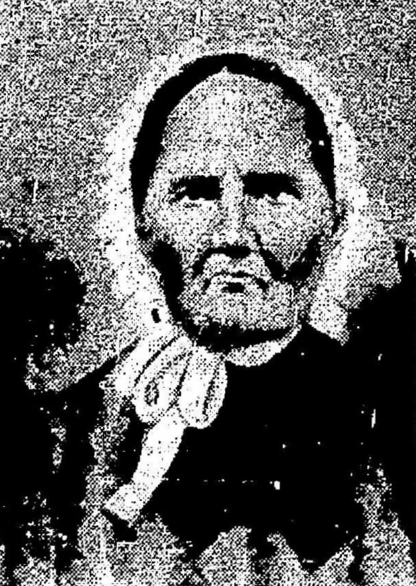
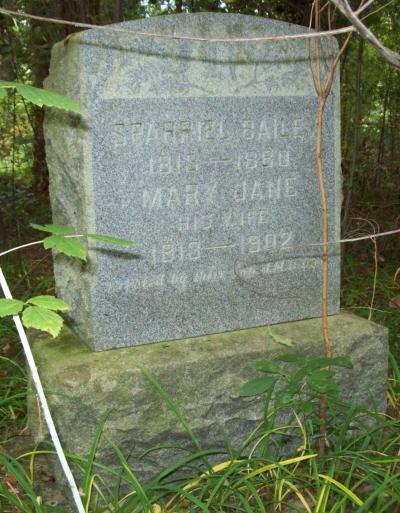

Mary Jane Tyree
1813 / April 1814 – 20 October 1902
Quick Facts
Immediate Family
Parents
Satterwhite W. Tyree Sr. × Rhoda “Roady” Taylor SUPPORTEDThe cemetery transcription calls her “(d/o Satterwhite & Rhoda Tyree)”; Turner 1982 annotates her “Jane 36 [d/o Saterwhite & Rhoda Tyree]”; the Warden account calls her “daughter of Satterwhite and Rhoda Taylor Tyree”; WikiTree lists her among Satterwhite’s children. Satterwhite was born about 1783 in Powhatan County, a schoolteacher, who bought 200 acres from Edward Williams on Glade Creek (title bond 16 February 1839, deed 5 June 1855) and died about 1860 — WikiTree’s own Death section says 1870 instead. He married Rhoda 17 February 1812 (Riffe, WikiTree) or 1813 (one research round) in Powhatan County; it was his second marriage. His parents, David Tyree Jr. × Ann Satterwhite, are carried as UNPROVED — a family-tradition reconstruction, and no will naming Satterwhite as a son was found in Cumberland Will Books 6–8. Rhoda’s parents are unknown. The 1900 census puts her birth about 1792.
Spouse
Sparrel Bailey (1813 – 1880 / 4 May 1881), married about 1832 UNPROVEDHer only husband named in any record. His death is unresolved — 1880 on the shared stone against 4 May 1881 on the West Virginia death register, with probate 2 July 1881 — and the 1880 census, taken 1 June 1880, shows him alive. His parents were John B. (Jonathan Bell) Bailey × Sarah “Sally” Jane Stanley — see his page.
Children
John Washington Bailey (born about 1834–35; Confederate soldier, never returned, fate unknown) SUPPORTEDJames Monroe “Jim” Bailey (12 September 1836, Fayette County – 12 June 1925, Raleigh County; married Mary Godbey 20 November 1856) SUPPORTED
William Henderson Bailey (25 December 1837 / 1838 – 25 March 1909; married Aley Ann Teel 25 December 1856) SUPPORTED
McDowell Bailey (born June 1841; married Mary F. Francis 6 March 1866) SUPPORTED
Margaret J. “Maggie” Bailey (born about 1842–1844 – 12 December 1912, Beckley) SUPPORTED
Amos Bailey (1 November 1845 / about 1847 – 5 April 1917; married Miram A. Wriston 29 November 1866) SUPPORTED
Armenta / Ariminta Bailey (born about 1846) SUPPORTED
Sarah Amanda Bailey (19 July 1848 – 17 October 1904; married William Mullins 14 February 1877) SUPPORTED
GEORGE_LINK SUPPORTED
Nine children, in birth order, named in the 1850 census household (Washington 15, James 14, William 12, McDowell 9, Margaret 6, Ariminta 4, Manda 2) and the 1860 household (John W. 25, McDowell 18, Margaret 16, Amos 13, Sarah A. 11, George 8). George Washington is the direct line. Six of the marriages are documented in the Raleigh County marriage transcriptions, which name parents: James × Mary Godbey 20 November 1856; William × Aley Ann Teel 25 December 1856; McDowell × Mary F. Francis 6 March 1866; Amos × Miram A. Wriston 29 November 1866; Sarah Amanda × William Mullins 14 February 1877; George × Letitia Warden 12 June 1872. No Raleigh marriage record exists for John Washington, Margaret, or Armenta. Two births are unidentified: in the 1900 census Mary Jane reported 11 children born and 8 living, against the nine named here — the two extra births are not named anywhere, and they are not Alexander, Wilhelmina, or Poke Bailey, who are ruled out as children. The eight living in 1900 are consistent with James Monroe, William H., McDowell, Margaret, Amos, Armenta, Sarah Amanda, and George Washington, so Armenta and McDowell were likely still alive in 1900. The disputed Jane is not a tenth child — she is Booker Bailey’s daughter, not Sparrel’s. Almira Susan Bailey (born about 1858; married Leander Jasper Gadd 1 January 1879) is a granddaughter, most likely William H.’s daughter, not a tenth child. FamilySearch IDs for the nine: John Washington LHK9-WCT; James Monroe LCC4-CNN; William Henderson LBW2-2DP; McDowell LCV9-945; Margaret LHK9-W5B (a second Margaret, LDZG-NN4, is carried on the same tree — a duplicate, not a second daughter); Amos L626-1TD; Armenta MV9P-BYM; Sarah Amanda LHK9-WKS; George Washington LV42-Z6V. FamilySearch also carries Alexander LVN5-1SY, Wilhelmina MMP8-KJJ, and Poke LVNR-MW6 as children — all three are ruled out here and are not adopted.
Siblings
Edward / Edwin W. Tyree (born about 1821) — half-brother SUPPORTEDRichard Thomas Tyree (1818–1891; married 23 May 1841, Fayette County) SUPPORTED
Lucinda Obedience Tyree (married Davis) SUPPORTED
Sarah Frances Tyree (married West) SUPPORTED
George W. Tyree (1826 – April 1874; married (1) Virginia Grass, (2) Nancy Clementine Meadows 18 February 1855) — half-brother SUPPORTED
Rebecca Susannah Tyree (married Meadows) SUPPORTED
Granville Tyree (about 1832 – 9 August 1864; died Andersonville Prison) SUPPORTED
Satterwhite W. Tyree (born 8 December 1803) — half-brother SUPPORTED
Seven full siblings and two half-brothers from Satterwhite’s first marriage, whose first wife was Mary. Edward is a half-brother — Turner 1982 says so in so many words, “[s/o Saterwhite & Mary Tyree]” — and so is Satterwhite W., born 1803. George W. is a half-brother on the Tyree profile and on WikiTree, which marks him [half]. FamilySearch lists all eight as full children of Satterwhite × Rhoda, without distinction, and WikiTree lists eight flat — so no single sibling count is stated here as settled. Satterwhite died at Richard’s home, at the mouth of Packs Branch. The WikiTree George W. Tyree born about 1806, died about 1875 in Kentucky, was not checked in the signed-in pass — one man with garbled dates or two men is unresolved. Catherine Tyree, born about 1777, living with Mary Weddle in 1850, is not identified and is not merged with FamilySearch’s Catherine Tyree of Buckingham County.
On Family Tree Sites
Life Timeline
1813 / April 1814 · age 0
Born, Patrick County, Virginia UNPROVED (the stone gives 1813; FamilySearch and the 1900 census give April 1814; Geni gives Powhatan County instead of Patrick — neither the year nor the birthplace is settled)
about 1832
Married Sparrel Bailey UNPROVED (no marriage record has been found)
1835–1852
Nine children born: John Washington about 1834–35, James Monroe 1836, William H. 1837, McDowell 1841, Margaret about 1842–44, Amos 1845, Armenta about 1846, Sarah Amanda 1848, George Washington 1852 SUPPORTED (1850 and 1860 censuses; in 1900 she reported 11 children born and 8 living — two births are unidentified)
26 July 1850 · age 36
Census, Raleigh County, household 78: Jane 36, with Sparrel 37 and seven children at home DOCUMENTED (image read)
November 1850 · age 37
Charter member of the Raleigh Baptist Church of Christ, organized at the Raleigh Court House SUPPORTED (Wood 1994, via the FamilySearch tree note)
1860 · age 46
Census, Raleigh County, p. 81: Mary J. 46, with Sparriel 47 and six children at home SUPPORTED
1870 · age 56
Census, Town District, household 21: Mary V. 56, with Sparriel 58, Margaret 25, Sarah M. 21, George 18 SUPPORTED
1880 · age 65
Census, Town District, ED 131: Mary J. 65, with Sparriel 66, Margret 34, Walter K. Bailey 10, Ann Farler 15 SUPPORTED
1900 · age 86
Census, Town District, ED 121: Mary J. Bailey, 86, widowed, head of household, with Margret 49, Avery Bailey 19, and Bertha Davis; “Number of Living Children 8, Number of Children 11” SUPPORTED
20 October 1902 · age 88
Died, Beckley, Raleigh County SUPPORTED (Find a Grave and the headstone source; no death-register entry has been located, so the date is supported, not register-proved)
Burial
Sparriel Bailey Cemetery, off Dry Hill Road, Beckley SUPPORTED (the shared stone, read directly)
Life Story
Mary Jane Tyree was born in 1813 or April 1814 — the stone says 1813, FamilySearch and the 1900 census say April 1814, and the birthplace is given as Patrick County on the stone and on FamilySearch and as Powhatan County on Geni — the daughter of Satterwhite W. Tyree Sr. and Rhoda “Roady” Taylor. She married Sparrel Bailey about 1832; no marriage record has been found. Nine children were born to them between about 1834 and 1852, and in the 1900 census, a widow of 86, she reported eleven children born and eight living — two births that no record names. The youngest, George Washington, carries the line.
She is named in the records by the name the censuses gave her: Jane. In July 1850 she was Jane Bailey, 36, in household 78 with Sparrel and seven children; in 1860 Mary J., 46; in 1870 Mary V., 56; in 1880 Mary J., 65; and in 1900 Mary J. Bailey, 86, widowed, head of her own household, with her daughter Margaret, 49, her grandson Avery Bailey, 19, and Bertha Davis. In November 1850 she was one of the fifteen charter members of the Raleigh Baptist Church of Christ, organized at the Raleigh Court House, while her husband was one of its two original deacons. Her father Satterwhite, a Powhatan County schoolteacher, had bought 200 acres on Glade Creek from Edward Williams in 1839; her brother Granville died at Andersonville Prison in August 1864, the family’s Civil War loss on the Tyree side, matching her son John Washington’s loss on the Bailey side.
She outlived her husband by more than twenty years. Sparrel was still alive at the 1880 census and dead by the time the stone was cut — whether in 1880, as the stone reads, or on 4 May 1881, as the death register gives, is unresolved, and the register’s own index and transcription disagree over whether he was single or married at death. Mary Jane lived on at Dry Hill Road, and died 20 October 1902 at Beckley, aged 89 by the stone’s arithmetic. No death-register entry for her has been located, so the date rests on the memorial and the headstone source rather than on a register. She is buried with Sparrel in the Sparriel Bailey Cemetery, under the shared stone that reads “SPARRIEL BAILEY / 1813—1880 / MARY JANE / HIS WIFE / 1813—1902.” Her portrait, shown here, comes from the same newspaper photograph as her husband’s — the clipping that calls them “one of Raleigh County’s early couples, and the progenitors of numerous descendants.”
Photo Gallery


Sources and Evidence
- 1900 census, Town District, Raleigh County, West Virginia, ED 121, sheet 5B, line 63 (read): “Mary J Bailey F 86, Birth April 1814 VA, Widowed, Head”, “Number of Living Children 8, Number of Children 11”, “Margret Bailey F 49”, “Avery Bailey M 19”, “Bertha Davis F”. SUPPORTED
- 1850 census, Raleigh County, Virginia (now West Virginia), District No. 59, household 78, 26 July 1850 (image read): “Jane Bailey F 36”, with “Sparel Bailey 37” and seven children. DOCUMENTED
- 1860 census, Raleigh County, p. 81 (read): “Mary J Bailey 46”, with “Sparriel Bailey 47” and six children at home. SUPPORTED
- 1870 census, Town Magisterial District, Raleigh County, household 21, p. 4 (read): “Mary V Baley F 56”, with “Sparriel Baley 58”. SUPPORTED
- 1880 census, Town District, Raleigh County, ED 131, sheet 184B (read): “Mary J. Bailey 65”, with “Sparriel Bailey 66”. SUPPORTED
- Find a Grave memorial 97245680, Mary Jane Tyree Bailey (read live 9 November 2026; verified live at build time): “BIRTH Apr 1813, Patrick County, Virginia, USA”; “DEATH 20 Oct 1902 (aged 89), Beckley, Raleigh County, West Virginia, USA”; burial “Sparriel Bailey Cemetery”, GPS 37.8175917, -81.2213583; bio: “Wife of Sparriel BAILEY; daughter of Satterwhite and Rhoda TAYLOR TYREE.” Main photo a portrait of Mary Jane (added by Coleman). SUPPORTED
- Shared stone, Sparriel Bailey Cemetery, off Dry Hill Road, Beckley (photograph read; USGenWeb transcription spar1.txt, read directly): “SPARRIEL BAILEY / 1813—1880 / MARY JANE / HIS WIFE / 1813—1902”. SUPPORTED
- Cemetery transcription, Sparriel Bailey Cemetery (read directly): “(d/o Satterwhite & Rhoda Tyree)” for Mary Jane; “Tyree, George W. d. Apr. 1874 (brother of Mary Jane TYREE Bailey. b.about 1826)”. SUPPORTED
- Turner 1982 annotations (read directly): “Jane 36 [d/o Saterwhite & Rhoda Tyree]”; Edward Tyree “[s/o Saterwhite & Mary Tyree]”. SUPPORTED
- Warden account (read directly): Mary Jane “daughter of Satterwhite and Rhoda Taylor Tyree”; the Tyrees “from Powhatan Co.” SUPPORTED
- WikiTree, Satterwhite Tyree, Tyree-92 (read directly): born about 1783, son of David Tyree and Ann Satterwhite, died about 1860 (Death section: 1870); children Edwin, George W., Mary Jane, Sarah F., Rebecca Susan, Richard, Lucinda, Granville; deed quoted — 200 acres from Edward Williams, title bond 16 February 1839, deed 5 June 1855, ¾ mile from the ford of Glade Creek. SUPPORTED
- Riffe 1950 (read directly): Satterwhite “was a native of Powhatan County, Virginia, school teacher, and lived on the old Williams place at Glade Fork, Raleigh County”; “one of the earliest school teachers of that section”. SUPPORTED
- 1850 census, Raleigh County, household 114 (read directly): “Satterwhite Tyree 67”, “Roady Tyree 58 F Va”, with Rebecca 20, Grandvil 18, and George 24. SUPPORTED
- Wood, Jim, Raleigh County West Virginia (BJS Printing & Office Supplies, Beckley, 1994), p. 568, as quoted on Sparriel Bailey’s Find a Grave memorial bio (read directly): the fifteen charter members of the Raleigh Baptist Church of Christ included “Mrs. Mary Jane Bailey” and “Mrs. Sally Bailey, Sr.”, and “Jacob Smith and Sparriel Bailey were the original deacons.” SUPPORTED
- First Baptist Church of Beckley, About page (beckleyfirstbaptist.org/about, read directly): “the Raleigh Baptist Church of Christ... was organized in November 1850”, with Matthew Ellison “the first pastor”. The page contains no “Bailey”, no charter-member list, and no deacon names. DOCUMENTED
- Newspaper clipping, “SPARRIEL AND JANE TYREE BAILEY” (Find a Grave photo, read directly): “Sparriel and Jane Tyree Bailey were one of Raleigh County’s early couples, and the progenitors of numerous descendants. Sparriel was the son of John Bailey, who settled on Paint Creek in 1827, later moving to the present site of the Shumate Dairy Farm on Harper Road. Sparriel’s brothers were Booker, George, and Leftwich. Mr. and Mrs. Sparriel Bailey are the grandparents of Mrs. Joseph Tyree, Mt. Hope Route 1, who supplied the above photograph.” The portrait on this page is a crop of that clipping. SUPPORTED
- Raleigh County marriage transcriptions (wvgw.net B page, read directly): “George 20 Raleigh to Letitie Warden 22 Raleigh 12 Jun 1872” (the direct line); “James 20 Raleigh s/o Spariel/Jane to Mary Godby 19 Pulaski d/o Enoc/Matilda 20 Nov 1856”; “William 19 Raleigh s/o Spariel/Jane to Aley Ann Teel 27 Henry, VA d/o Mankin/Emily 25 Dec 1856”; “McDowell 24 Raleigh s/o Sparriel/Jane to Mary F. Francis 24 Raleigh d/o James/Susan 6 Mar 1866”; “Amos 21 Raleigh s/o Sparriel/Mary Jane to Miram A. Wriston 20 Raleigh d/o Thomas/Martha 29 Nov 1866”; “Sarah Amanda 24 Raleigh to William Mullins 27 Wyoming 14 Feb 1877”. DOCUMENTED
- Geni, FamilySearch, WikiTree, and Find a Grave, read live 9 November 2026: Geni Mary Jane 6000000008971714853 (birth “April 1814, Powhatan, Powhatan County, VA”; Sources tab empty); FamilySearch Mary Jane M67M-DKB (“April 1814 – 20 Oct 1902”; birth “April 1814 Patrick, Virginia”, 6 sources; death “20 October 1902 Raleigh, West Virginia”, 1 source; 11 sources, none of them a death-register source); WikiTree Mary Jane (Tyree) Bailey Tyree-421 (born “Apr 1813 Patrick County, VA”; died “20 Oct 1902” Beckley, age 89; mother of the same 8 — it omits Armenta); Find a Grave Mary Jane 97245680. SUPPORTED
- FamilySearch, Satterwhite Tyree LHPP-R99 (read live 9 November 2026): “1783–1870”; birth “1783 Virginia” (0 sources); death “1870 West Virginia” (0 sources); marriage “17 February 1813 Powhatan, Virginia, United States” (0 sources); parents David Tyree Jr. 1748–1826 × Ann Satterwhite 1750–1810; eight children listed. SUPPORTED
Grades: DOCUMENTED an original record says it · SUPPORTED several records point to it · FAMILY ACCOUNT the family’s own telling · UNPROVED a lead, not proved.
Research Notes and Open Questions
- Grades: DOCUMENTED means an original record read directly says it; SUPPORTED means several records point to it; FAMILY ACCOUNT means the family’s own telling; UNPROVED means a lead, not proved. Every fact on this page carries its grade.
- Birth, unresolved on both points: the stone and Find a Grave give April 1813, Patrick County; FamilySearch gives April 1814, Patrick County, 6 sources, and the 1900 census gives April 1814, Virginia; Geni gives April 1814, Powhatan County. The Warden account says the Tyrees were “from Powhatan Co.”, which is the family’s origin county, not necessarily her birthplace. No birth record exists. Neither the year nor the birthplace is stated here as settled.
- Death, supported but not register-proved: 20 October 1902 rests on Find a Grave, the Legacy NFS headstone source (“Cemetery record or headstone: death: 1902”), and the compilations. A filtered search of “West Virginia, Deaths, 1804–1999” (Mary Bailey, died 1902, Raleigh, spouse Sparriel) returned four records, none of them Mary Jane as principal, and her eleven FamilySearch sources contain no death-register source. A 1925 “Jane Tyree in entry for...” West Virginia Deaths source attached to her profile is likely mis-attached.
- Marriage, no record: no marriage record for Sparrel × Mary Jane has been found in Fayette or Raleigh County, and none is stated here. FamilySearch’s “26 October 1854, Raleigh” marriage date is an error — impossible against children born from 1835 — and is never used.
- Parents — Satterwhite’s marriage, 1812 vs 1813: WikiTree’s source line says he married Rhoda “17 February 1812”, Powhatan County; FamilySearch’s tree says “17 February 1813”; a FamilySearch indexed search for the marriage returned no results. It was his second marriage — his first wife was Mary, the mother of Edward and of Satterwhite W., born 1803.
- Parents — Satterwhite’s parents, UNPROVED: David Tyree Jr. × Ann Satterwhite is a family-tradition reconstruction that WikiTree states as fact. No will naming Satterwhite as a son was found in Cumberland Will Books 6–8, 1817–1832; what exists is an estate administration account (Will Book 8, image 155 of 166, from 22 May 1826) that names no sons, and a full-text search found “Satterwhite” nowhere in volumes 6–8. The will itself remains unread — the general index to wills is restricted to FamilySearch Center viewing. FamilySearch’s “Brief Life History” claim that Satterwhite was a War of 1812 veteran in Captain Samuel Marshall’s company is a tree claim with no source count; the dig found no War of 1812 service, and it is not adopted here. Rhoda’s parents are unknown — the unsourced Abraham Taylor × Frances Bickle is set aside, and the tree’s Matthew Taylor is a bare placeholder.
- Satterwhite’s death, conflicted: WikiTree’s heading says about 1860 and its Death section says 1870; Davis (Tyrees, 2020) says he “died at the home of Richard at the mouth of Packs Branch.” A FamilySearch 1860 index entry shows him alive at Paint Creek in 1860. Neither year is stated here as settled.
- Children roster — eleven born, nine named (C21): in the 1900 census Mary Jane reported 11 children born and 8 living, against the nine named in the Children card. Two births are unidentified. They are not Alexander, Wilhelmina, or Poke Bailey, who are ruled out as children. The eight living in 1900 are consistent with James Monroe, William H., McDowell, Margaret, Amos, Armenta, Sarah Amanda, and George Washington. The disputed Jane is Booker Bailey’s daughter, not hers. Almira Susan Bailey (born about 1858; married Leander Jasper Gadd 1 January 1879) is a granddaughter, most likely William H.’s daughter, not a tenth child.
- Siblings — half-brothers marked: Edward (mother Mary, the first wife) and Satterwhite W., born 1803, are half-brothers; George W. is a half-brother on the Tyree profile and on WikiTree. FamilySearch lists all eight as full children of Satterwhite × Rhoda, without distinction, so no single sibling count is stated here as settled. Granville died at Andersonville Prison, 9 August 1864. The WikiTree George W. Tyree born about 1806, died about 1875 in Kentucky, was not checked — one man with garbled dates or two men is unresolved. Catherine Tyree, born about 1777, living with Mary Weddle in 1850, is not identified and is not merged with FamilySearch’s Catherine Tyree of Buckingham County (born 1790, married Edmond Toney 1817, living in Buckingham County in 1850 and 1860).
- The two Arimintas: Sparrel’s daughter Armenta, 4 in 1850, was living with her uncle Booker in 1860 (“Araminta Bailey”, 14), while Booker’s own daughter Araminta, 6 in 1850, married George W. Hood 10 January 1867. The “Araminta Bailey Hood” Find a Grave hint attaches to a different FamilySearch person (Araminta Bailey 1844–1905), not to Sparrel’s daughter — no Hood marriage is stated here for her.
- The portrait: Mary Jane’s portrait on this page is a crop of the joint newspaper photograph “SPARRIEL AND JANE TYREE BAILEY”, supplied by their granddaughter Mrs. Joseph Tyree of Mt. Hope Route 1 — most likely Josephine Bailey, Amos’s daughter, who is indexed as “Josie P Tyree” in her 1971 death record. The same portrait is attached to her FamilySearch memories and to her Geni profile. Her husband’s portrait is the other crop of the same photograph.
- Still open: the Fayette County marriage record for Sparrel × Mary Jane, about 1832; the Powhatan County marriage record for Satterwhite × Rhoda (1812 vs 1813); Armenta after 1860 (no marriage or death found); McDowell after the 1860 census; Margaret’s obituary, full text, and the father of her sons Avery and Walter; and Ancestry — Tricia’s tree was blocked site-wide at the signed-in pass (“automated traffic is prohibited”), so no Ancestry ID is carried here and the tree is unread, not absent.
- Tree checks, signed in 9 November 2026: Geni — Mary Jane 6000000008971714853, Sparriel 6000000008971784016; FamilySearch — Mary Jane M67M-DKB, Sparriel MRCN-F34; WikiTree — Mary Jane Tyree-421, Sparriel Bailey-19039; Find a Grave — Mary Jane 97245680, Sparriel 97229644 (verified live at build time).
Profile history: Created 9 November 2026 from the family couple profile and research notes.